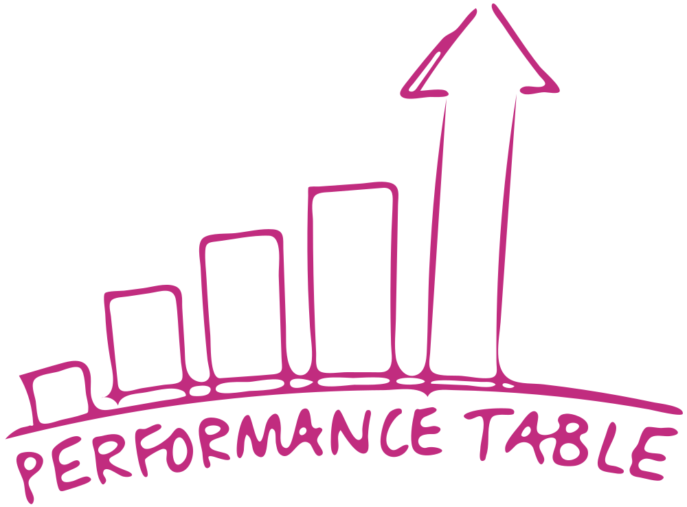
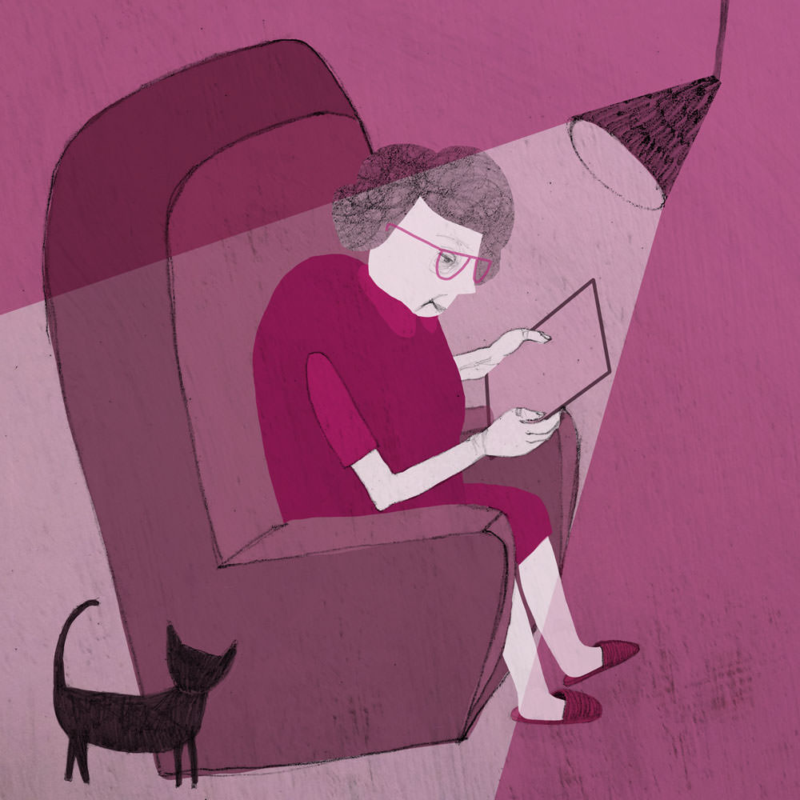
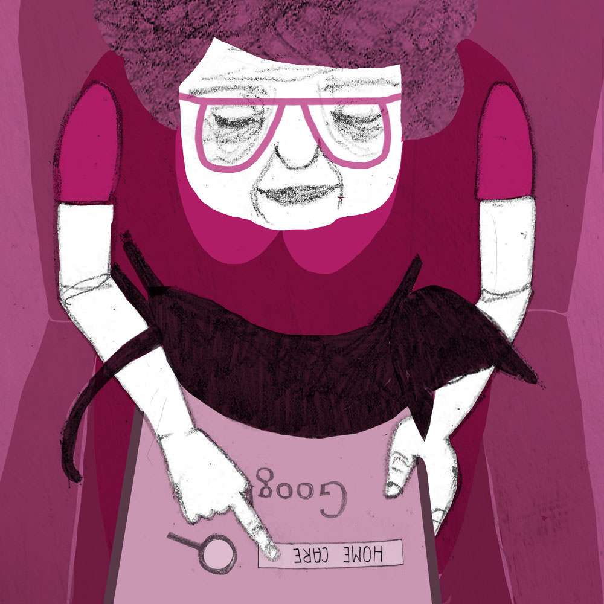
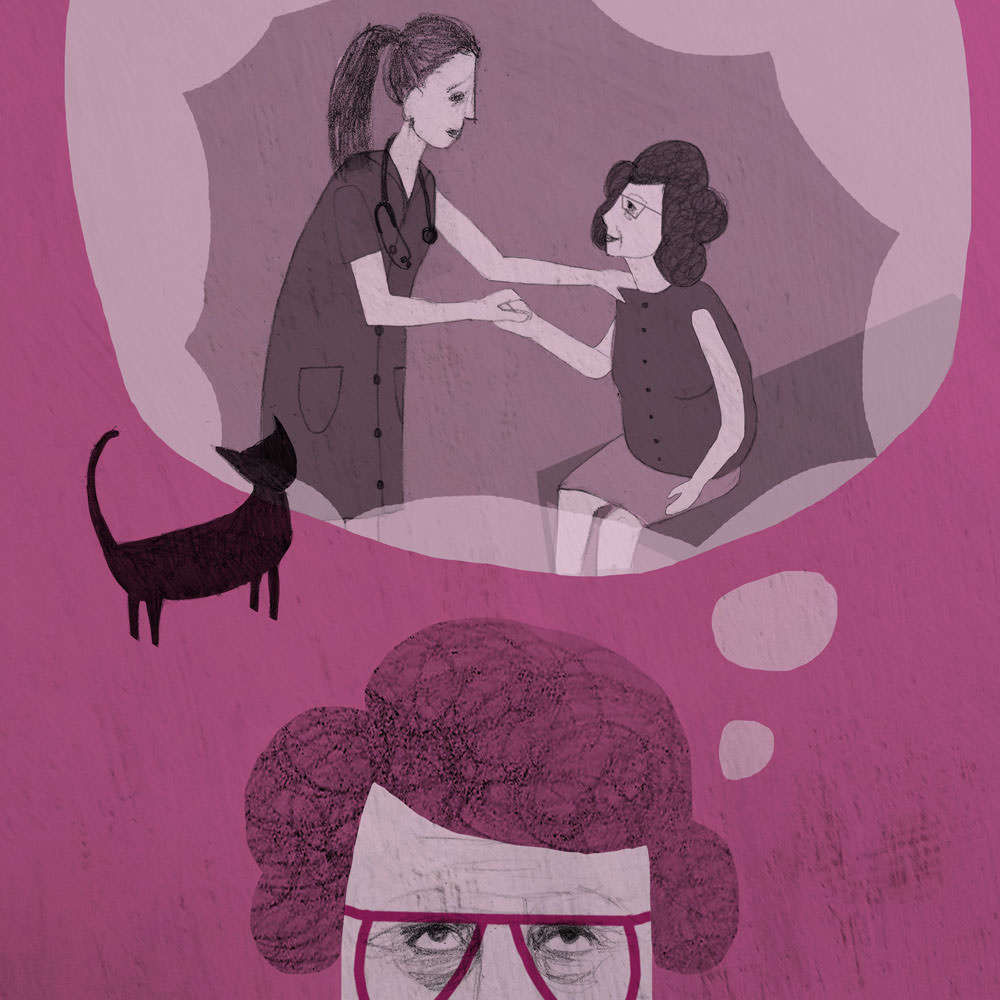

Main characteristics: Well organised, hierarchical, competitive, seamless technology but not people centred, over medicalised, professionals as experts, blame culture, fear and mistrust, power and control in the hands of the professionals, clinical and reactive.
Today in 2025 there are encouraging signs that many of the health messages and interventions of previous decades are leading to healthier lifestyles among the younger population with smoking and binge-drinking at an all time low among 18-25-year-olds.
However, the increasing number of older people, particularly those aged 75+, continues to put a massive strain on public services.
The new government, mindful that the ‘septuagenarian stampede’ was coming down the track, took the decision five years ago to speed up reform. Following a three year transition programme, full integration of health and social care functions was completed in 2023. Services were carefully streamlined to avoid duplication so the most could be made of vital resources.
Former health boards and local authorities have merged and bedded-in as single administrative units. These constantly require cost effective solutions from department heads juggling falling budgets and rising demand and increasing expectations from a burgeoning number of people with long-term health or social problems. An unexpected rise in the birth rate has served to exacerbate pressures on diminishing resources.
 It has been a steep learning curve for staff, especially managers who have all undergone a new in-house MBA style course designed to provide them with skills including objective decision making, collaborative management and dynamic leadership.
It has been a steep learning curve for staff, especially managers who have all undergone a new in-house MBA style course designed to provide them with skills including objective decision making, collaborative management and dynamic leadership.
The new National Health and Social Service (NHSS) offers a one-stop-shop to patients and maximises the use of technology to increase productivity and keep human resources costs to a minimum. Online GP consultations and virtual wards are the norm. Patients are required to pay for a face-to-face consultation.
Accident and emergency doctors regularly consult specialists out of hours via video link. As well as potentially saving lives, this cuts staffing costs.
The old district and cottage hospitals have disappeared and there are just six regional Centres of Surgical and Medical Excellence for all procedures. These ultra-efficient state-of-the-art centres use the latest technology and techniques to save and prolong people's lives.
There is a high throughput of patients who receive top quality care by experts, but once treated they are discharged quickly, often the same day, with no further intervention unless they are re-admitted. Carers, many of whom are in their 60s and already under pressure or suffering from chronic ailments, are left to pick up the slack.
Treatments are denied to those who refuse to give up unhealthy lifestyles, giving rise to less tolerance and a lack of empathy for those perceived to have brought ill health upon themselves.
Self management is central to the NHSS's strategy to reduce the need for health care services, particularly in the acute hospital sector where unit costs are high. This is despite all areas have been targeted for efficiency savings. User friendly personal monitors and new technologies allow many patients to manage their conditions at home and has made transition from hospital to home seamless.
Those with complex or chronic conditions are often prescribed mobile phones with pre-loaded apps to meet their assessed needs. These apps provide relevant medical information, lifestyle advice and links to peer groups and other community-based groups to combat social exclusion.
More than 80% of those deemed to need care or support receive it in their homes from a range of professionals, but mostly from new health and social care practitioners (HSPs), who, as part of a multi-disciplinary team, keep colleagues in the loop on how patients are doing. Increasing workloads mean that these new peripatetic HSPs often end up working longer hours than they are paid for, or have to leave without finishing some of their tasks to the detriment of the person they are supporting.
A study carried out by researchers at the University of Glasgow based on early pilot schemes concluded that while a small number of people were naturally resistant to mobile care (Mcare), and that some had sold their phones for cash, self management had the potential to save millions of pounds through reduced hospital admissions and other interventions.
There are now plans to roll out Mcare to a wider group of patients, including those with terminal cancer and life-limiting conditions. To ensure wide uptake everyone over 75 will be eligible for free wifi from next April. Macmillan Cancer Support has criticised the lack of adequate emotional support and advice to help people cope with the side effects of drugs, meet wider needs and come to terms with their condition.
Community groups and charities continue to attack the new reforms for restricting choice and for being budget rather than person-focused – the guiding principle of integration a decade ago.
A number of charities have also expressed serious concerns about the over-reliance on telecare. In an open letter to the Caledonian newspaper, Age Concern Scotland wrote: “Replacing people with machines has not been the answer.
Care is over medicalised and faceless. Isolation and loneliness have become the biggest issues for vulnerable people in Scotland.” A survey by the organisation found that that one in three older people spend most, if not all of their day, alone in their home.
Some aspects of new technology that have been widely welcomed include new biometric identification techniques that allow primary care health records, which are linked to hospitals, to be accessed even if patients are unconscious. This method has already identified a number of people previously unknown to the care system and has been credited with helping to contain the outbreak of bubonic plague which has already killed hundreds of people in Africa and the USA.
The government, which swept to power on the back of its social justice agenda, is proud of its equality programmes, which target areas of acute deprivation and are funded by new fat and sugar taxes. Keen to reduce persistent poor levels of health and close the significant income and life expectancy gap between the most deprived and most affluent areas of Scotland, politicians have invested heavily in education, employment and healthy living campaigns.
In the 10 designated test bed areas, community high schools run from 9am until 6pm and are open on Saturdays for sports, volunteering or practical activities such as cookery courses which are open to all in. Teachers from these schools go on secondment to the region's best performing private schools as part of the Best Practice in Teaching programme.
In addition to an increase in training and enterprise schemes, school leavers not going on to further or higher education are guaranteed a minimum of three months' work experience in local firms. Meanwhile, under the Healthy Lives Initiative local residents also have access to heavily subsidised leisure facilities and free fruit and vegetables.
While it will be years before it is known if these policies have improved the life chances of local residents, there are signs that some progress is being made. The average grades of school leavers in targeted schools have significantly improved for the second consecutive year and emergency hospital admissions in these neighbourhoods have been cut by a third. Police Scotland has also reported reductions in youth crime and anti-social behaviour across the pilot sites.
A fall in the numbers of young offenders – boosted no doubt by the introduction of supported employment lasting up to two years for all care leavers – has freed up funding to allow an expansion of rehabilitation services. These measures should also contribute, over time, to a reduction in ‘reactive’ public expenditure by reducing so called “failure demand.”
Recognising the importance of “place and space” in creating thriving neighbourhoods, the government has stipulated that all new schools and colleges are to be built around communities and local amenities and must include protected areas of parkland which cannot be built upon.
Standardisation and the current risk averse health and social services system leave little room for creative solutions. There have been calls for more social prescribing by GPs for activities ranging from fishing and swimming, to knitting, dancing and baking to keep people physically and mentally healthy, out of hospital and off painkillers and anti-depressants.
A recent study from Audit Scotland found the NHSS could cut more than £10m a year off its drugs bill if doctors curtailed medical approaches. Overstretched GPs, however, rarely have time to discuss alternative approaches within their ten minute slots. Pills are often the quickest option.
All NHSS referrals are monitored through the recently expanded Patient Safety Programme which records adverse events and outcomes. Staff have become paranoid about negative publicity and fear being hauled before the NHSS Council following recent adverse publicity over a drowning accident during a young leaders' course.
Their bosses meanwhile are desperate to do well in the annual performance league table. This is despite criticism from Audit Scotland in its latest report that authorities are focusing their attention on the cost of services without sufficient attention to, or information about, quality and value for money.
The pressure to meet targets is taking its toll. Figures released by CoSLA (the Convention of Scottish Local Authorities) last month revealed record levels of stress and sickness rates among both divisional directors and staff on the frontline. Most would retire early, but this is no longer an option.

There has been a steep rise in the number of industrial tribunals as staff fight back against poor personnel management and weak leadership. A recent case which resulted in the reinstatement of a social worker and the sacking of her boss highlighted a lack of direction and vision and a worrying “climate of fear and intimidation”.
While these cases have been described as “isolated local issues” a number of authorities are sending senior staff with a history of complaints against them on mandatory courses to improve their communication, staff motivation and people skills to avoid future costly payouts.
 While the ageing population has added considerably to the pressures on the care system, the young old continue living as if they were much younger – working, gardening, shopping and going on holiday.
While the ageing population has added considerably to the pressures on the care system, the young old continue living as if they were much younger – working, gardening, shopping and going on holiday.
Many take online courses and there has been a growth in so called “Golden Age” community radio stations and local websites run by people in their sixties and seventies.
Social media has given this age group a new outlet for sharing their skills and interests and a greater appetite for actively participating in local and national politics.
Many members of the government's cabinet are in their late sixties, including the First Minister, a reflection of the rising age of the general population.
The increased use of technology in health and social care has required carers as well as workers to develop new skills and keep abreast of the constant updates.
New leadership courses aimed at speeding up decision making and increasing efficiency have helped staff educate carers and patients in telecare. These courses are now an integral part of all training programmes. They offer staff new strengths, including adaptability, confidence, sensitivity and determination.
While the installation and maintenance of equipment has attracted more men into the sector, women still dominate the workforce. Many of those from the traditional social care workforce have taken on new roles and undertaken new training, with higher pay, as health and social care practitioners. Some former directors of social work have returned to the coal face in new joint health and social care roles.
Now that the NHSS has significantly reduced its workforce, private firms and third sector organisations play a much larger role in proving care and support services, from the much reduced care home sector to child care and day services.
These groups are benefiting from an influx of volunteers following the government's new initiative that will see all S4-S6 pupils and university students receiving free tuition fees if they carry out eight weeks of voluntary work a year. However, these organisations are struggling due to significant cuts to budgets. The pressure to drive down costs has led some to question the independence of the voluntary sector.
A thriving community movement is working behind the scenes, sometimes in conjunction with these groups, plugging some of the gaps and providing their own solutions to local problems.
Their work ranges from associations offering friendship and support to groups providing playgroup, holiday activities and after-school support for children with complex additional needs, local co-operatives and individual volunteers.
Social enterprises are also helping local people re-define their relationship with their cities while creating new opportunities and driving social and economic change. Initiatives range from shops and restaurants employing homeless people to organisations offering palliative care at home for patients who are being failed by the cash-strapped NHSS. While demand is high for the latter, services are limited due to lack of funding.
The rapid increase in local participation from community groups in the last five years was a key driver in the recent reforms. Policy makers quickly recognised their potential to be part of the response to the growing demand for care.
Before integration, social services directors had started to lead a move towards a more collaborative approach with service users and community organisations.
Increasingly, these groups are operating in parallel to the NHSS rather than in collaboration now that money is driving decision making and professionals have to justify every penny spent. Community organisations and third sector groups compete with each other and professionals for funding.
The NHSS has ended any meaningful public consultation on service issues in the belief that they are merely talking shop and it’s a waste of time and money. The profession tends to be dismissive and sceptical of community-led alternatives while community groups in turn feel undervalued and frustrated, accusing the NHSS of arrogance and short-sightedness.
From the point of view of the NHSS, the service is well organised, efficient and seamless but it is less flexible for patients/users who merely have to accept what is on offer unless they pay for alternatives. Many vulnerable people are dependent on neighbours and friends to act as de facto carers as their own families live too far away. A large number of older people live alone following the death of their partner or because of the high divorce rate among the post 60 age group. While Skype keeps them in touch its no use in cases of emergency.
Many are critical that the promise of integration and enabling technology has failed to be realised. During a recent debate in parliament one politician stated:
“This slick world of infinite possibilities is foundering because of fear, mistrust and the continual failure to remember that care is about helping people to achieve the best outcomes.”
Care workers are exhausted and demotivated and service users are fed up with poor services being thrust upon them, but feel powerless to effect any change. People are as dependent on the state as they were in 2014, if not more so.
Judith’s story
Judith, 82, was diagnosed with terminal liver cancer three months ago. She lives alone following the death of her second husband Fergus last year. They had been married for 25 years and both have children from previous relationships. A dispute over her late husband's estate threatens to end in court as he did not leave a will. His adult children don't want Judith to inherit money they consider to be rightfully theirs and have not hidden their resentment of that possibility. Judith has been told by Citizens Advice that this is a common issue. She and her late husband always put off the subject and it is the cause of increasingly bitter family arguments.

Her daughters from her first marriage, Gail and Lesley, offer what support they can but Judith doesn't want to bother them as she knows they have busy lives and problems of their own. Lesley’s husband was recently seriously injured in a car crash and while his leg was saved by ground-breaking treatment, physiotherapy is limited on the NHS and he is unable to work. Gail, a director of a large travel firm, frequently travels away for work.

Judith has been prescribed a tablet device loaded with a range of apps so she can monitor her condition and send relevant data to her specialist. Her clinics are online which saves on travel but she misses face-to-face contact with her consultant and nursing staff. She can go for days without seeing anyone as she has little energy to go out to meet friends.
Her current health and social care practitioner (HSP) visits three times a week but is rarely there for more than half an hour and while he says he is always available on Skype, he doesn't answer her calls. She has had three or four different HSPs in the last month due to high staff turnover rates which is stressful for her.
Judith believes most staff are doing their best but from what she can see their workloads are too big and they don't get enough support from their managers who are paid far more than them.

Holistic needs assessments for cancer patients to identify the help people need are no longer available on the NHSS due to cut backs. Judith has heard about a group that offers home care but doesn't know where to get more information. Her GP is unaware of any such service. Judith knows she doesn't want to die in hospital but wants to talk to someone about having what she calls “a good death”. She hopes she can spend the year or so that she has left in as little pain as possible, but she has little energy to fight for the services she wants and needs.